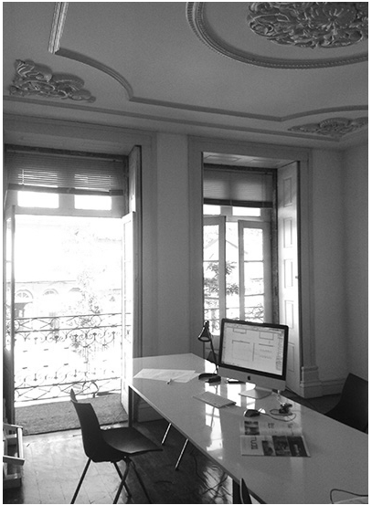

"Muda.arq associados" com sede em Guimarăes, Portugal, tem como principal atividade a Arquitetura, dedicando-se a toda a área de intervençăo que esta abrange, desde o Mobiliário, Design e Urbanismo.
Somos uma equipa multidisciplinar, cuja principal formaçăo é a arquitetura, a experięncia adquirida ao longo dos anos com projeto desenvolvidos nas diferentes áreas e escalas de intervençăo confere-nos as competęncias necessárias para a elaboraçăo de todas as fases de construçăo.
Disponibilizamos aos nossos clientes, quer particulares, quer investidores essencialmente do setor imobiliário, soluçőes ajustadas ŕs suas necessidades, procurando dar resposta aos padrőes de qualidade, prazo e custo exigidos por um mercado cada vez mais rigoroso.
Temos capacidade de resposta para um serviço completo de gestăo de um processo de investimento, o que inclui todas as fases do mesmo, vai desde o estudo de mercado, investimento, conceçăo/construçăo e venda.
Principais serviços prestados:
- :: Projetos de arquitetura
- :: Remodelaçăo/Reabilitaçăo
- :: Arquitetura de interiores
- :: Desenho de mobiliário
- :: Modelaçăo 3D
- :: Consultoria técnica em arquitetura e construçăo civil
Arquiteto José Pedro Machado
Natural e residente de Guimarăes, nasceu a 08 de Maio de 1981 e licenciou-se em Arquitectura na Universidade do Minho em 2006. Trabalhou em Antonio Gradim Arquitecto Lda entre 2006 e 2012, desenvolveu projectos pessoais com outros arquitectos desde 2012 é gestor de projectos na MUDA.ARQ associados LDA, onde é também responsável pela colaboraçăo com o gabinete JBMM arquitectos, com sede em Gondomar.
Em Março de 2014 foi distinguido com o Prémio Nacional de Reabilitaçăo Urbana 2014 na categoria de mençăo honrosa destinada ao melhor projecto de reabilitaçăo com área total de construçăo inferior a 1000m2, pelo seu projecto pessoal para a Casa de Selho de Riba situada em Fermentőes - Guimarăes.
Inscrito na Ordem dos Arquitectos com o n.ş15786